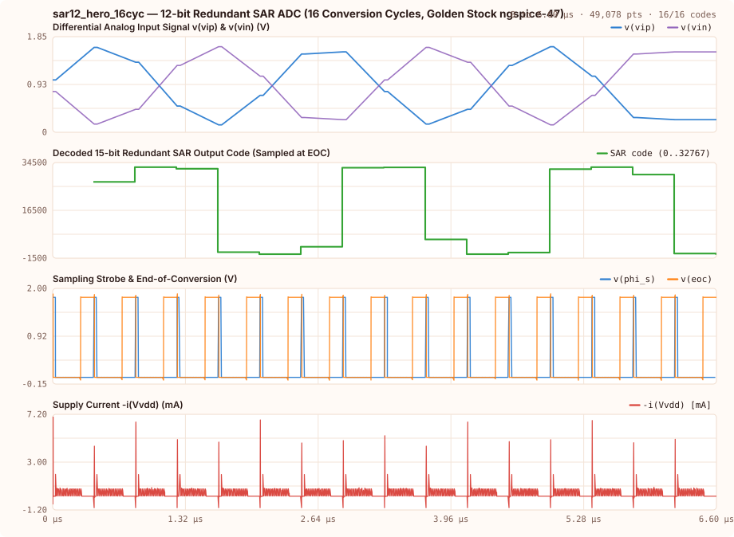
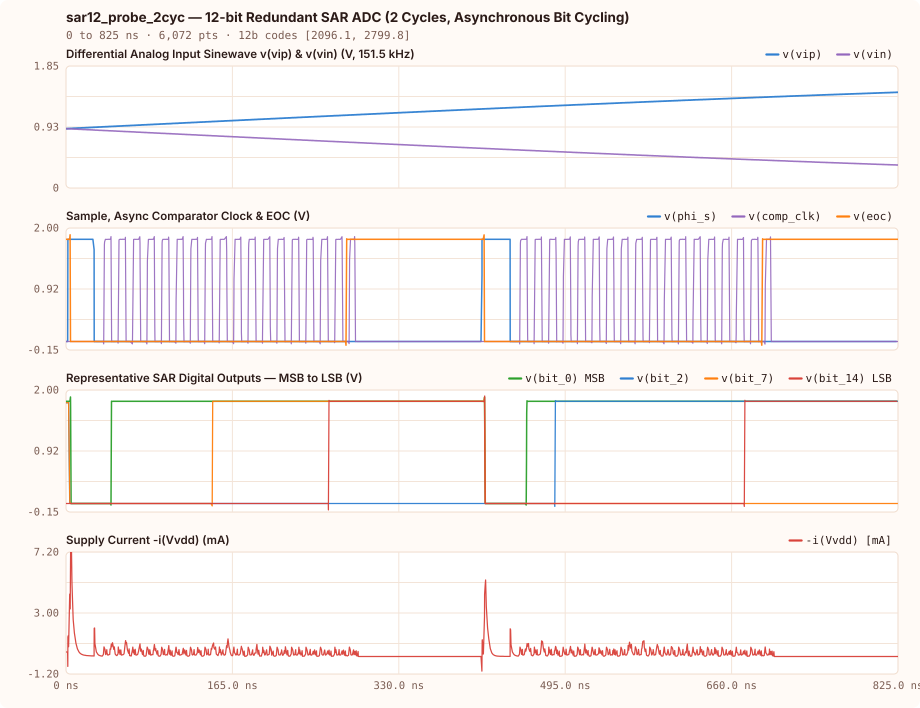
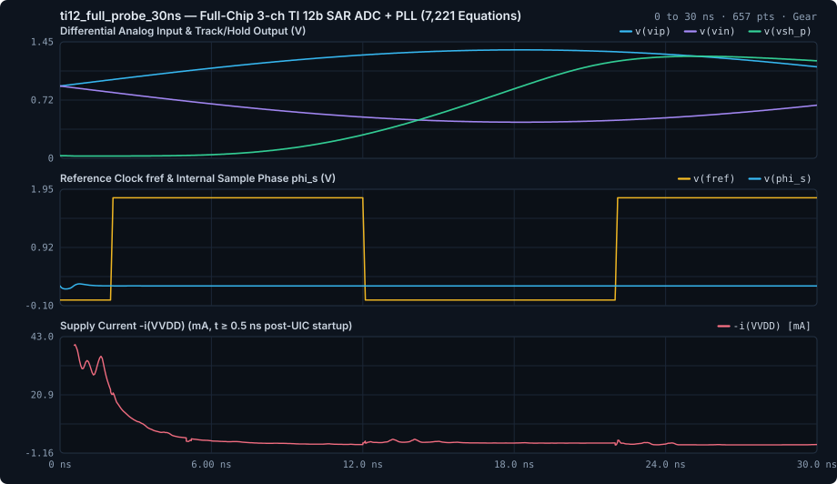
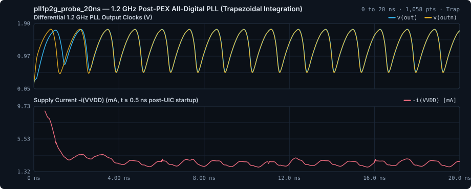
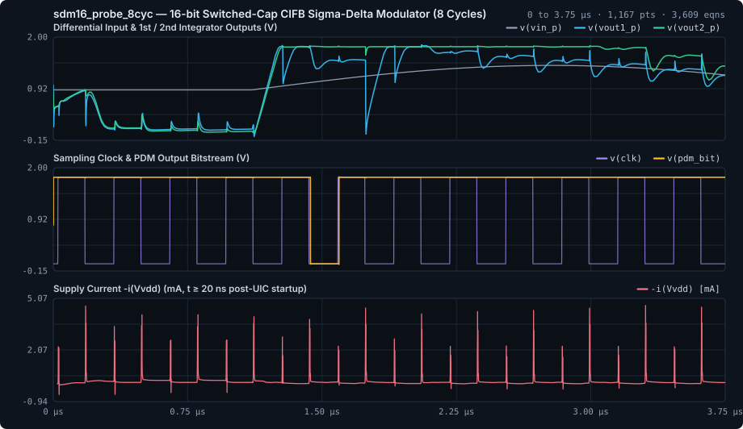

Suite Design Philosophy
Real Post-PEX Mixed-Signal Silicon
Synthetic ring-oscillator or inverter-chain decks miss the memory hierarchy, model-binning, and sparse-solver bottlenecks of real tapeout simulations.
Every circuit here is a post-PEX mixed-signal design from aicdb
using the open-source GlobalFoundries 180nm MCU PDK (wafer-space/gf180mcu, BSIM4v5 + BSIM4v6 + MIM caps + 7T standard cells + extracted R/C parasitics).
Balanced Stress Across SPICE Subsystems
The 4 probe decks and 1 hero deck span distinct execution bottlenecks: BSIM4 device evaluation (sar12, pll1p2g),
large-matrix factorization & netlist/PDK loading (ti12_full at 7,221 equations),
switched-capacitor sparse LU solve density (sdm16 at 3,609 equations / 30k NNZ),
and long-horizon >200k-iteration switching stability (sar12_hero_16cyc).
Strict Golden Accuracy Enforcement
Every run writes a binary .raw file verified by scripts/compare_raw.py against unmodified stock ngspice-47 golden baselines
(golden/*.raw.gz). Any build using -ffast-math or unsafe approximations that violates RMS tolerances or flips a single SAR digital code fails verification.
Workload Summary Matrix
Click any deck name to jump to its detailed specification below| Deck | Suite | Equations | Orig NNZ | Sparse Fill | Method / Tran | Timepoints | Newton Iters | Primary Bottleneck | Stock Sp 1c Ref |
|---|---|---|---|---|---|---|---|---|---|
sar12_hero_16cyc |
Hero | 1,559 | 14,092 | 11,948 | gear · 6.6 µs |
54,581 | 208,490 | BSIM4 Eval + KLU Refactor | 628.48 s |
sar12_probe_2cyc |
Probe | 1,559 | 14,092 | 12,516 | gear · 825 ns |
6,793 | 27,301 | BSIM4 Eval + KLU Refactor | 79.66 s |
ti12_full_probe_30ns |
Probe | 7,221 | 63,591 | 30,954 | gear · 30 ns |
680 | 2,121 | BSIM4 Eval + PDK/Netlist Load | 51.52 s |
pll1p2g_probe_20ns |
Probe | 1,307 | 12,158 | 3,532 | trap · 20 ns |
1,062 | 2,866 | BSIM4 Eval (High Switching) | 11.46 s |
sdm16_probe_8cyc |
Probe | 3,609 | 30,011 | 20,418 | gear · 3.75 µs |
1,473 | 5,596 | KLU / Sparse LU Factor & Solve | 7.94 s |
sar12_hero_16cyc — 12-bit Post-PEX Redundant SAR ADC (16 Conversion Cycles)
Full-length hero transient benchmark designed to exceed 10 minutes on stock single-core ngspice-47 (628.48 s Sparse 1c on Ryzen 9 7940HX).
Simulates 16 complete conversion cycles of a 1.8 V 12-bit majority-voting redundant successive-approximation ADC with MIM capacitor DAC,
dynamic comparator, asynchronous SAR digital control logic, and extracted RC parasitics (sar_12b_1v8_mvote_mim.spice, 587 R, 1,232 C, 794 subckt/MOS instances).
Exercises both 3.3 V BSIM4v5 (including trap-assisted tunneling on pfet_03v3) and 5 V BSIM4v6 stdcell transistors across rapid comparator decisions and digital bit-cycling.

ngspice-47): reconstructed 15-bit redundant SAR codes across all 16 conversion cycles, sampling/EOC strobes, and supply current.
Open full SVG
Simulation Parameters
Saved Signals & Verification Criteria
sar12_probe_2cyc — 12-bit Post-PEX Redundant SAR ADC (2 Conversion Cycles)
Short 2-cycle version of the 12-bit post-PEX SAR ADC included in the 4-deck probe geomean.
Preserves the exact same circuit, DC operating point, comparator dynamics, and solver profile as sar12_hero_16cyc at ~1/8th the wall time,
making it ideal for rapid single-core profiling and regression sweeps.

ngspice-47): 2 conversion cycles zoomed in to show asynchronous v(comp_clk) pulses, sequential MSB→LSB bit settling, and supply current.
Open full SVG
Simulation Parameters
Saved Signals & Verification Criteria
ti12_full_probe_30ns — Full-Chip 3-Channel Time-Interleaved 12-bit SAR ADC + PLL
Largest circuit in the suite (7,221 equations, 63,591 matrix nonzeros, 854 KB post-PEX netlist with 60 subcircuits and 8,335 subcircuit/device calls).
Combines 3 time-interleaved 12-bit SAR channels, sample-and-hold front-ends, calibration logic, and an on-chip clock-generation PLL.
Stresses L2/L3 cache footprint during device evaluation, BSIM4 model-binning & PDK/subcircuit netlist expansion (where .uselib shines),
and truncation-error evaluation across thousands of MOSFETs.

ngspice-47): differential analog input, track/hold node v(vsh_p), reference clock v(fref), and post-UIC supply current.
Open full SVG
Simulation Parameters
Saved Signals & Verification Criteria
pll1p2g_probe_20ns — 1.2 GHz Post-PEX All-Digital PLL (20 ns)
High-frequency 1.8 V 1.2 GHz all-digital PLL (ad_pll_1v8_1p2g_pex.spice, 229 KB, 15 subcircuits, 2,328 device/subckt calls)
using Trapezoidal integration (the only non-Gear deck in the suite, validating Trap order-1/2 device & capacitor integration paths).
Because high-frequency oscillation keeps a large fraction of transistors actively switching every 20 ps timestep, this workload heavily stresses
raw BSIM4 evaluation throughput (transcendental exp/log, SIMD efficiency) and frontend PDK load latency.

ngspice-47): differential 1.2 GHz oscillator clocks v(out) / v(outn) and post-UIC dynamic supply current.
Open full SVG
Simulation Parameters
Saved Signals & Verification Criteria
sdm16_probe_8cyc — 16-bit Switched-Capacitor CIFB Sigma-Delta Modulator (8 Cycles)
Second-order switched-capacitor cascade-of-integrators-with-feedback (CIFB) 16-bit sigma-delta modulator
(sdm_16b_1v8_mim_cifb_split.spice, 932 R, 822 C, 668 subckt/MOS instances, 3,609 equations, 30,011 nonzeros).
Features dense capacitor/switch coupling and high matrix fill-in (20,418 Sparse fill-ins), making it the most
linear-solver-bound workload in the suite — highlighting KLU vs Sparse LU refactorization and triangular solve performance.

ngspice-47): analog input, 1st/2nd switched-cap integrator outputs, sampling clock, PDM output bitstream, and supply current.
Open full SVG
Simulation Parameters
Saved Signals & Verification Criteria
PDK Submodule & Precompiled Library Mode (.uselib)
GF180MCU D PDK Submodule
All 5 decks include the exact GlobalFoundries 180nm MCU PDK models via the pdk/gf180mcu git submodule
(design.ngspice, sm141064.ngspice corners typical, res_typical, moscap_typical,
mimcap_typical, cap_mim, plus gf180mcu_fd_sc_mcu7t5v0.spice).
Standard vs Precompiled (.uselib) Mode
In Standard mode, ngspice parses and expands the raw ASCII PDK files on every run.
In Precompiled (.uselib) mode (for builds supporting --precompile / .uselib),
decks/pdk_gf180_typ.spice is precompiled once to a binary .nglib cache while all top-level circuit netlists remain uncached —
modeling the real iterative IC design loop where the PDK is fixed and the netlist changes every run.